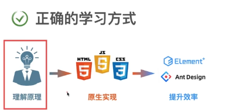

技术资料
搜信息去看 Mdn
程序员思维
写代码注意点（架构方面）
- 拆分组件的时候，尽量要考虑到的复用性，可以尽量拆的小点，一个功能拆成一块，尽量不要传太多的参数，这样会导致不好复用的，拆组件和写复用函数有异曲同工之妙
- 数据的处理，脑中一定要有步骤，不要急（重要）；写代码一定是先想清楚怎么写，然后再动手，脑中一定先要有思路
- 先数据逻辑，再界面逻辑，最后是交互
- 能够计算的数据 不要再开属性去存值了，这样会有数据冗余的
- 永远不要过早考虑效率，刚开始一定是用最方便的方式开发，刚开始的时候一定是怎么方便怎么来 不要搞管理，不要优化，上线是最重要的，东西是最重要的，等到公司大了以后或者代码出问题了才去管理或者优化代码
- 做功能的时候一定是分模块，从小到大，大圈包小圈，比如购物车，每个人商品是一个类，然后整个界面是另一个类，整个界面的类方法去调用商品里的方法，小圈做好自己的事情，大圈来统筹计算，整个思想，公司也是如此，国家也是如此，各司其职。
- 解决问题最好的办法就是杜绝问题发生的可能，假如你去买一个微波炉，你肯定不希望看见一个几千页的说明书说不能这样干，不能那样干，所以程序还是需要考虑周到，应该要做到你怎么干都行，怎么干都不会出问题。要考虑别人想不到的，多做判断，路都给用户堵死，让他只能在你的代码下按你想要的方式去运行，让对方怎么用都行，这样的代码才是健壮的，这才是优秀的程序员。
- 当需求变动的时候，你的代码变动要尽量小，可维护得高
- 做东西的时候不需要跟抄的一模一样跟的很麻烦，你只需要大刀阔斧的改就行了，调整让他好看点，最后不知道的怎么改好看的时候再调整一下就好
- 刚开始啥也没有的时候一定不要自己去想怎么弄，而是先拿一个模板去抄，抄完以后就会思绪泉涌，这时候再去改比较正确
- 写函数里面复杂一些是可以接受的，但一定要让调用的人方便，调用的人好用才行
- 尽量不要在一个地方判断太多，不然就会很乱到后面就不好维护
- 分支太多的时候一定要错误前置
学习技术与底层
技术永远服务业务，先讲业务才能吸引别人
降低复杂度 就是增加细粒度
细粒度降低以后也会更好好控制和重用
定方案，定框架，这个才是真正值钱的东西
程序员最重要的就是开发能力，开发能力是基本你目前所学到的知识解决问题
工具本身不值钱，能不能把你手上的工具用好才值钱
一支笔给画家和给你是一样的，值钱的永远是人
学习开发能力其中一个点就是浸泡，所以说环境很重要，所以说大厂的环境和高度一定要去看一看
很多东西不是你遇到了，我再去想，这玩意该怎么解决，等到那个时候你是找不到方案的，很多东西你得提前接触。提前接触的好处在于，等到你真正需要的时候，你多了一个选项
先会使用,再懂原理,最后手写
使用和懂原理比较重要，手写比较困难，一般也不需要懂得这么深
学习的时候也要注意应用场景
其实页面渲染就是用了 canvas，浏览器只是把这个接口给你，让你也可以画而已，其实他自己也是画的
写软件大部分时候是写后台，后台比前台复杂十倍不止，前台有的后台都要有，前台没有的，后台也需要控制，你所看见的一切可能都是别人制造的，生活也是如此，楚门的世界，一个微信群里 100 个人，可能就骗你一个。
代码写的好不好的几大标准
效率
可维护性
可阅读性
可扩展性
没必要人云亦云的什么页面仔，会被 ai 取代，ai 也能写前端，35 岁被裁员之类的。我觉得写程序是一个脑力活，年纪大了是容易精力跟不上，但是年纪大了也应该表明掌握的东西应该更多，而不是停滞不前。从一路前端学过来我觉得硬性的知识点和软性的程序思维来看，写程序都是一个相对复杂的工作，不至于说会被取代，如果这个会被取代，那么很多其他行业更应该走在前面，至于说面试造火箭，工作扭螺丝。可能其实面试的知识在实际工作中用的不多，可是面试确实是有难度的问题，他把前端的核心与难点提炼出来考你，有人在背面试题，我觉得这是一种能力不够的表现，真的有实力应该是都经历过，都了解过，而且能说出其本质来，这才是水平。
公司小的时候，尽量把代码写在一起，好维护
当公司大的时候，尽量把代码细化，分开好管理
所以个人代码也应该如此，一开始的时候尽量少开工程，最好都写在一起，后面功能逐渐变多的时候才选择拆分代码去不同的工程
为什么有些数学题的思路有些人想的到，有些人想不到，为什么有些人会说这些我拿到手就会做
为什么有些人的代码写出来就很舒服，可扩展性和可维护性就很好
我觉得还是一个人在一个领域的熟悉程度所影响的，你必须要有足够的眼界，见的够多，就算玩，要玩的好也得玩的更多，说到底还是功力不够，时间不够，思考的不够
有句话叫做一个人的悟性怎么样
计算机的尽头是数学
一定需要搞清楚基本理论和基本方法，基本知识才不会被淘汰，而不是一直了解各种框架 沉迷业务，没有太大意义。学思维模式 学思路很重要。
框架代码的严格程度非常之高和自己写软件 if 判断完全不一样，可是在平时写代码的时候也不需要那么严谨，但必须知道，越是通用的东西越要考虑到各种的可能性。代码的复杂度会越高，质量也越好
css 真的需要一些想象力与审美
看源码的意义就是读过源码以后就可以彻底理解了，就不用去记各种各样的规则了，彻底掌握
技术是越新的越好用，越新的越好，可是大公司来说，旧的代码也能用，基本上没有动力去更新，然后就是新技术的出来往往需要生态的建立与一段时间的磨合与使用。就像不给你饭吃，你并不会马上饿死
代码人生
现在躺平的人多，所以高端东西反而便宜，低端东西都涨价
所以现在低端岗位卷，高端岗位反而缺人
做一份工作的时候就应该准备下一份
很多代码最后写出来都很简单，但是代码的背后是你需要对原理有一个深刻的理解，原理理解越深刻，你解决问题的办法越多，解决问题的速度就越快
当我们去封装组件，一旦一个组件变得通用以后，他的难度复杂度就会急剧上升
一旦深入本质，所有的规则都消失了，规则只是你不了解原理源码来跟你讲的简单一点所要求的东西
前端学习
基本知识(api)+原理+程序思维+官网
有了这一切都可以搞定任何问题
只学 api 不学原理的弊端
难以满足定制化需求，一旦有不同，不知道怎么去改
难以调试 bug，不懂原理出了问题不知道如何下手
依然麻烦，其实原理懂了以后一通百通

真正对你有帮助的，一定是你认知以外的东西
开闭原则：一个好的软件系统，应该对修改关闭，对新增开放
改了功能之后应该对新增代码，而不是修改原有代码
你可以不造轮子，但你不能不会造轮子，当有一天需要你造轮子的时候 要能够造出来
分析问题，分解问题的思路非常重要
程序员最值钱的东西一定是方向，方案，思路
认知的提升来自于基本问题的理解
代码的通用程度
模块级别->项目级别->公司级别->开源
实现功能的时候哪里不好实现，做哪里，都会的东西没必要一遍一遍重复了
不懂原理，你就不懂为什么，当遇到问题的时候，你就只能猜，不能够彻底搞懂
要写公共组件公共库需要读一些源码，否则没有思路
前后端不分离一个人全栈是最 low 的岗位
开闭原则 一个好的软件系统，应该对修改关闭，新增开放
参数归一化 让情况变得单一
可以不造轮子，但必须有造轮子的能力，不然真叫你造轮子的时候，你造不出来
用库是因为 我知道他怎么实现 然后自己实现起来比较麻烦 才选择的用库，而不是只是一个 api 的调用者
开发思维来自优质源码
架构的核心是定标准，定标准的人一定是牛逼的，像公司给你定考勤标准，面试标准，国家给你制订宪法。所以制订代码标准的人一定是职级高的，代码底层=职位高层
接触高层你才能真正懂业务，懂得钱是怎么来的，钱是怎么赚的，才能懂商业逻辑
所以要往高处走，当领导，才能接触高能力的人，不光光是薪资和能力的提升，还能了解更多的事物，知道更多的事情，接触高级的人
公司不希望你提升，也不需要你懂原理，你只需要你能完成自己手上的活，然后到了 35 岁把你踢了，再换个年轻便宜的，所以学习是自己的事情
高端岗位反而不卷，低端也很卷，都是躺平的人，想靠体力活卷别人，那你就看看能不能卷的过，人生就像逆水行舟，不进则退，不能想着保全现在的岗位
一个知识点，你学过但你平时不会用，时间久了就会忘记，但是只要你有思考有投入看过忘了也没事，知识会沉淀下来
我学习的东西跟我现在的公司里的东西没有关系
但和我为了的公司有关系
除非你跟公司绑在一起
大公司有架构组
架构残酷的地方就是让写业务的人变成傻瓜 所以业务不能久待
八股文都是非常原理的东西
可以给我们提供解决问题的方案
费曼学习法是一种学习方法，就是学完要把他讲出来，不停去思考
架构是最难调整的，一旦一开始技术选型出了问题，那后面是很难做的，只能在原来的基础上修修补补
写框架的人一定会用 object.is()来判断，因为===有问题，所以脑中一定要有这个知识点。就像对技术选型要有足够的了解，足够的知识储备，才不会在运用的时候出问题，再去修改
很多时候自己没用过的 API 和方法，不是说明他不重要，他写出来一定有他的用处，没有用到是因为自己的视野太窄了，用不到。不接触框架，不接触抽象，永远都是业务代码，当然不需要这么严谨也不需要使用一些 API
你只有有时间思考而不是一直搬砖才能把代码想的更好，写的更好
知识的广度决定了解决问题的角度
知识的深度决定了解决问题的程度
系统越复杂就越需要架构师
架构师也有能力高低 看系统的复杂程度
解决复杂问题的能力
去写一个框架就能快速具备这样的能力，前提是你能写出来
当你只是写写界面 写点业务逻辑的时候 会觉得面试造火箭，工作拧螺丝，可是当自己工作几年了开始写组件了，开始写源码了，那难度就陡峭上升，因为要考虑更多的东西和条件（其实面试考察你的能力已经非常深了，为什么需要去背面试题，是因为你本身的能力并不具备或者并没有实践过，太过深奥，以至于只能采用最笨的背诵去应付面试）
开发工作就像下棋 环境要紧，如果身边都是高手，那一定可以学到东西，人是会被环境影响的，环境非常重要；物以类聚人以群分，真的是这样
很多时候学习的是思路，你做的练习，以后可能都不会用到，可是锻炼学习的能力，以及遇到事情的处理方式，这才是重要的
开发是创造性的工作，是艺术，如果有通用的东西早就封装成一个库使用了，正是因为工作中老板也不知道要你下一件做什么事情，所以说才会要招开发来做事
如何事情，一旦触碰到本质，都会变得异常简单，你觉得复杂只是因为你不懂他
术语可以降低沟通成本
把学习当成乐趣，你得想学，你得坐一天都不觉得累，你得自发的去学习，不要老想着高薪水，高薪水是水到渠成的事情，慢就是快，不要有太强的功利心
学习本身就是一件很有意义的事，终身学习，持续的去学习，去探索这个世界
如果你遇到一个难题，你可以后退一步，或者后退几步，去思考前边一个更加根本性的问题
比如职业生涯规划之类的，刚开始一定没有想这么远，刚开始一定是去解决根本性的问题，创业也是一样，一开始不要想太远了
慢慢来，比较快
数学模型和计算机代码就是用来抽象现实世界的，当你觉得代码复杂的时候，其实现实世界就是这么复杂，就像是 promise
学习方法
面对细枝末节的知识
1.知道他是干什么
2.他怎么干的(可以忘记)
其实知道的越多知识，你的知识面也就越广，但你遇到问题的时候你就会有更多解决方案，你可以到时候再去查阅如何使用
学习的时候要抓大，放细节
细节不是不重要，细节在需要使用的时候很重要，但没有使用到的时候，他就一点也重要，他不是核心概念和知识